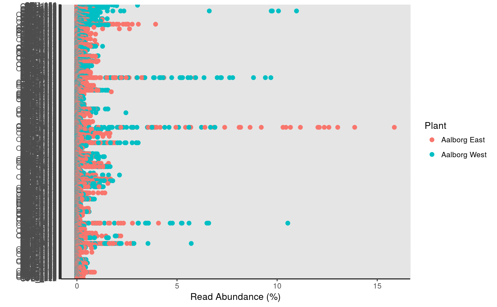
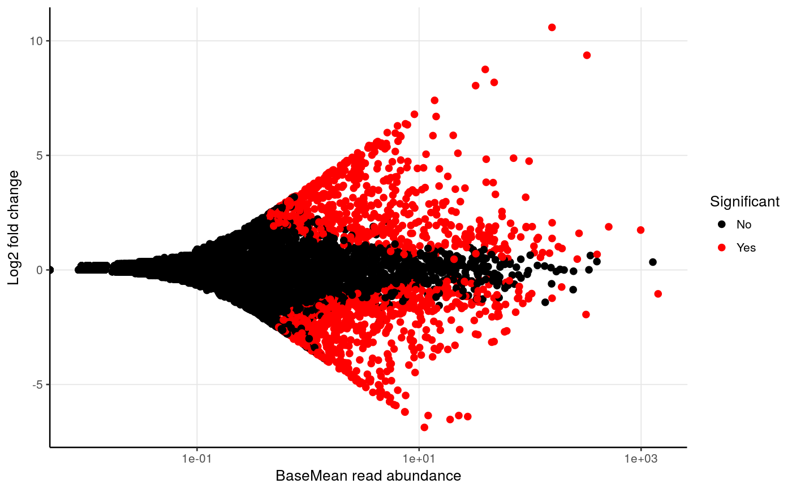

Tests if there is a significant difference in abundances between samples or groups hereof based on selected conditions.
amp_test_species(data, group_by)
| data | (required) Data list as loaded with |
|---|---|
| group_by | (required) The group to test. |
| signif_thrh | Significance treshold. (default: |
| fold | Log2fold filter for displaying significant results. (default: |
| plot_type | Either |
| plot_nshow | The amount of the most significant results to display. (default: |
| plot_point_size | The size of the plotted points. (default: |
| tax_aggregate | The taxonomic level to aggregate the OTUs. (default: |
| tax_add | Additional taxonomic level(s) to display, e.g. |
| tax_class | Converts a specific phylum to class level instead, e.g. |
| tax_empty | How to show OTUs without taxonomic information. One of the following:
|
| adjust_zero | Keep 0 abundances in ggplot2 median calculations by adding a small constant to these. |
| plotly | Returns an interactive plot instead. (default: |
A list with multiple elements.
#Load example data data("AalborgWWTPs") #Save the results in an object results <- amp_test_species(AalborgWWTPs, group_by = "Plant")#>#> Warning: some variables in design formula are characters, converting to factors#> #> #> #>#>#> #> #> #>#>#>#>#> #> #> #>#>#> #> #> #>#>#> #> #> #>#> #> #>#>#> #> #> #>#>#> #> #> #>#Show plots results$plot_sigresults$plot_MA#> Warning: Transformation introduced infinite values in continuous x-axis#Or show raw results results$DESeq2_results#> log2 fold change (MLE): Plant Aalborg.West vs Aalborg.East #> Wald test p-value: Plant Aalborg.West vs Aalborg.East #> DataFrame with 9430 rows and 6 columns #> baseMean log2FoldChange lfcSE stat pvalue #> <numeric> <numeric> <numeric> <numeric> <numeric> #> OTU_1 1.276198e+03 0.34239700 0.1857000 1.843817558 0.06520973 #> OTU_10 2.461317e+02 -0.05700420 0.3211763 -0.177485705 0.85912689 #> OTU_100 7.525537e+01 0.11801692 0.2074387 0.568924431 0.56940742 #> OTU_1000 9.262255e-02 0.44904191 2.9310477 0.153201842 0.87823911 #> OTU_10000 1.369987e-02 0.00593258 2.9310477 0.002024048 0.99838504 #> ... ... ... ... ... ... #> OTU_999 0.09132574 -0.3160899 1.9290969 -0.16385380 0.8698462 #> OTU_9990 1.39485530 -0.7368632 0.4484708 -1.64305735 0.1003711 #> OTU_9997 0.16301680 -0.4580823 1.4876206 -0.30792950 0.7581360 #> OTU_9998 0.08730501 -0.0610444 2.2107531 -0.02761249 0.9779712 #> OTU_9999 0.05835078 -0.2413834 2.9310477 -0.08235397 0.9343652 #> padj #> <numeric> #> OTU_1 0.1211038 #> OTU_10 0.8977572 #> OTU_100 0.6666665 #> OTU_1000 NA #> OTU_10000 NA #> ... ... #> OTU_999 NA #> OTU_9990 0.1727849 #> OTU_9997 NA #> OTU_9998 NA #> OTU_9999 NA